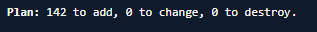

Provision the AWS cloud environment
This page covers the first deployment phase: provisioning the AWS cloud environment using Terraform. These steps prepare your Amazon Web Services (AWS) infrastructure and validate that the foundational resources are ready for Kubernetes deployment. Complete this section before proceeding to Initial Kubernetes Deployment.
On this page
- Prepare deployment files and configuration
- Validate AWS access and network prerequisites
- Run Terraform provisioning
- Validate provisioned AWS resources
- Connect to EKS and validate cluster readiness
- Next steps
Before you begin, complete the general Prerequisites and the AWS-specific Prerequisites for deploying on AWS.
Prepare deployment files and configuration
Complete these steps to download the infrastructure package and prepare your environment-specific Terraform files.
- Go to the NEDSS-Infrastructure v7.12.0 release page. Under Assets, download the
nbs-infrastructure-v7.12.0.zipfile. - Open a terminal (bash, macOS Terminal, CloudShell, or PowerShell) and unzip the downloaded file.
- To hold your environment-specific configuration files, create a new directory in
/terraform/aws/. Give the new directory an easily identifiable name such asnbs7-mySTLT-config. -
Copy
terraform/aws/samples/archive/NBS7_standardto the new directory and change into the new directory.cp -pr terraform/aws/samples/archive/NBS7_standard/* terraform/aws/nbs7-mySTLT-config cd terraform/aws/nbs7-mySTLT-configBefore you edit the
terraform.tfvarsandterraform.tffiles, review the README files for each Terraform module underterraform/aws/app-infrastructurein each module’s directory. Do not edit files in the individual modules. -
Update the
terraform.tfvarsandterraform.tfwith your environment-specific values.If you plan to deploy the Data Compare tool, also add the following variables to your
terraform.tfvarsbefore runningterraform apply. If you deployed to a non-default namespace, you should adjust thedatacompare_namespace_and_servicevalue accordingly.create_datacompare_irsa = true datacompare_s3_bucket_name = "<your-s3-bucket-name>" datacompare_s3_bucket_keyname_prefix = "<your-key-prefix>" datacompare_namespace_and_service = ["default:data-compare-api-service", "default:data-compare-processor-service"]This creates the IAM role (
<eks-cluster-name>-datacompare-role) and S3 access policy required by the Data Compare pods. The role ARN is referenced during Data Compare deployment.
Validate AWS access and network prerequisites
Before running Terraform, validate database network access and confirm that your AWS authentication is active.
- Review the inbound rules on the security groups attached to your database instance and ensure that the CIDR you intend to use with your NBS 7 VPC (
modern-cidr) is allowed to access the database. For example, if themodern-cidris10.20.0.0/16, there should be at least one rule in a security group associated with your database that allows MSSQL inbound access from yourmodern-cidrblock.
-
Verify that you are authenticated to AWS. Use the following command to verify access to the intended account. For more information, see the AWS CLI credential configuration guide.
$ aws sts get-caller-identity { "UserId": "AIDBZMOZ03E7R88J3DBTZ", "Account": "123456789012", "Arn": "arn:aws:iam::123456789012:user/lincolna" }
Run Terraform provisioning
Run the Terraform commands in order to initialize state and apply your infrastructure changes. Terraform stores its state in an Amazon S3 bucket. The following commands assume that you are running Terraform authenticated to the same AWS account that contains your existing NBS 6 application. Adjust the commands accordingly if this does not match your setup.
-
Change to the account configuration directory created in Prepare deployment files and configuration that contains
terraform.tfvars, andterraform.tf. For this example, those files are in thenbs7-mySTLT-configdirectory.cd terraform/aws/nbs7-mySTLT-config -
Initialize Terraform by running:
terraform init -
Run
terraform planto calculate the set of changes that need to be applied:terraform plan
-
Review the changes carefully to verify that they match your intention and do not unintentionally affect other configurations that you depend on. Then run
terraform apply:terraform apply -
If
terraform applygenerates errors, review and resolve the errors, then rerunterraform apply.
Validate provisioned AWS resources
After applying Terraform, verify that the expected AWS infrastructure resources were created correctly.
- Review the
terraform applyoutput in your terminal to verify that the infrastructure was created without errors. - In the Amazon VPC console, verify that the newly created VPC and subnets were created as expected. Then review the associated Route Tables to verify that the CIDR blocks you defined are present.
- In the Amazon EKS console, select the cluster and inspect Resources > Pods and Compute. Verify that the cluster was created successfully and that at least 30 pods and 3 to 5 compute nodes are present, based on the minimum and maximum node values defined in
terraform/aws/app-infrastructure/eks-nbs/variables.tf.
Connect to EKS and validate cluster readiness
Use these steps to connect to the cluster and verify that core Kubernetes resources are available before continuing.
-
While authenticated with AWS, open a terminal or command line. Use the following command to authenticate into the Amazon EKS cluster and the cluster name that you deployed in the environment.
aws eks --region us-east-1 update-kubeconfig --name <clustername> # e.g. cdc-nbs-sandboxIf the command errors out, verify that:
- There are no issues with the AWS CLI installation.
- You have set the correct AWS environment variables.
- You are using the correct cluster name, as shown in the Amazon EKS console.
-
Run the following command to verify that you can run commands to interact with the Kubernetes objects and the cluster:
kubectl get pods --namespace=cert-managerThis command should return 3 pods. If it does not, refresh your AWS credentials and repeat the verification steps.
-
Verify that worker nodes are registered and ready to run workloads:
kubectl get nodesVerify that multiple nodes are listed and each node shows a status of
Ready. If nodes are missing or showNotReady, check node group health in Amazon EKS and verify your AWS authentication before continuing.
Next steps
You have now installed your core infrastructure and Kubernetes cluster. Continue to Initial Kubernetes Deployment to configure your cluster.